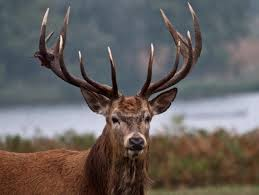

Лісова фауна — це сукупність тварин, що мешкають в лісах, зважаючи на необхідність в джерелах їжі, місцях для розмноження або захисту. Лісова фауна становить до половини всіх відомих видів тварин. Її представники можуть мати специфічні адаптації до умов лісу.
